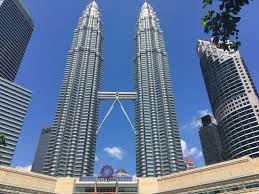
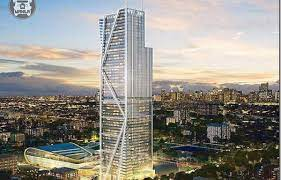

10 NEGARA ANGGOTA ASEAN
Indonesia

Indonesia adalah negara kepulauan terbesar di dunia yang terletak di Asia Tenggara. Jumlah pulau yang dimiliki oleh Indonesia adalah sebanyak 17.508 pulau dengan keseluruhan luas wilayahnya adalah sebesar 1,904,569 km2. Pulau-pulau utama Indonesia adalah Pulau Sumatera, Pulau Kalimantan, Pulau Jawa, Pulau Sulawesi dan Pulau Papua. Sebagai Negara Kepulauan Terbesar di dunia, Indonesia juga merupakan salah satu negara yang memiliki garis pantai terpanjang di dunia.
Secara astronomis, Indonesia yang berada diantara Benua Asia dan Benua Australia ini terletak di antara 6°LU – 11°08’LS dan dari 95°’BT – 141°45’BT. Selain diapit oleh dua benua, Indonesia juga berada diantara Samudera Pasifik dan Samudera Hindia serta dilintasi oleh garis khatulistiwa. Indonesia berbatasan darat dengan negara Papua Nugini di Pulau Papua, Malaysia di pulau Kalimantan dan Timor Leste di Pulau Timor. Sedangkan Negara yang berbatasan laut dengan Indonesia adalah Singapura, Filipina, Australia dan India (Kepulauan Andaman dan Nikobar).
Indonesia memiliki populasi sebanyak 275.122.131 jiwa (2021) dengan mayoritas penduduknya adalah penganut agama Islam (sekitar 87,2%). Jumlah penduduk sebanyak 275 juta jiwa tersebut menjadikan Indonesia sebagai negara yang memiliki jumlah penduduk terbanyak keempat di dunia sekaligus juga merupakan negara yang berpenduduk muslim terbesar di dunia (sekitar 227 juta jiwa penduduk Indonesia adalah beragama Islam).
Dalam bentuk pemerintahannya, Indonesia menganut sistem pemerintahaan Republik Presidensil yang Kepala Negara dan Kepala Pemerintahannya dipegang oleh seorang Presiden. Presiden dan Wakil Presiden Republik Indonesia dipilih langsung oleh Rakyat Indonesia melalui Pemilihan Umum Presiden dan Wakil Presiden (Pilpres diselenggarakan 5 Tahun sekali. Nama lengkap Indonesia adalah Republik Indonesia dengan Ibukotanya adalah Kota Jakarta.
Di hubungan Luar Negeri, Indonesia merupakan negara anggota PBB dan negara anggota lembaga-lembaga yang berada dibawah PBB. Republik Indonesia juga merupakan negara anggota APEC, ASEAN, G-20, ADB, OKI, IORA dan organisasi-organisasi Internasional lainnya. Indonesia adalah salah
2. Malaysia

Negeri Jiran Malaysia merupakan salah satu dari 11 Negara di Asia Tenggara yang tergabung dalam organisasi ASEAN. Pada artikel kali ini kita akan membahas profil negara Malaysia secara rinci, singkat dan jelas. Malaysia adalah negara kerajaan yang dipimpin oleh seorang raja. Raja Malaysia bergelar Yang Dipertoan Agong. Raja dipilih dari salah satu raja-raja negara bagian. Raja bertindak sebagai kepala negara Malaysia.
Adapun kepala pemerintahannya adalah perdana menteri. Kota paling terkenal di Malaysia sekaligus tujuan utama turis asing untuk berlibur adalah Kuala Lumpur. Jika anda punya rencana liburan ke luar negeri, berikut ini rekomendasi tempat wisata di kota tersebut.
Letak dan luas wilayah Malaysia, Malaysia terbagi menjadi 2 wilayah, yaitu Malaysia bagian barat dan Malaysia bagian timur. Malaysia bagian barat terletak di Semenanjung Malaka, sedangkan Malaysia bagian timur terletak di bagian utara Pulau Kalimantan. Kedua wilayah tersebut dipisahkan oleh Laut Cina Selatan. Secara astronomis, Malaysia terletak pada 1o LU – 7o LU dan 100o BT – 119o BT. Adapun batas-batas wilayah Malaysia yaitu:
• Sebelah utara: Thailand dan Laut Cina Selatan.
• Sebelah timur: Laut Sulu.
• Sebelah selatan: Pulau Kalimantan.
• Sebelah barat: Selat Malaka.
Luas wilayah Malaysia mencapai 329.758 km2. Luas wilayah tersebut terbagi menjadi 13 negara bagian. Di bagian barat terbagi menjadi 11 negara bagian, terdiri dari Kedah, Perak, Selangor, Negeri Sembilan, Penang, Pahang, Perlis, Kelantan, Malaka, Johor, dan Trengganu. Bagian timur terdiri dari 2 negara bagian, yaitu Sabah dan Serawak.
Keadaan Alam Negara Malaysia. Daerah tengah Malaysia bagian barat berupa pegunungan. Puncak tertinggi dari pegunungan tersebut adalah Gunung Tahan. Di bagian selatan berupa dataran rendah yang kering. Di sebelah timur terdapat kawasan hutan yang tidak terlalu luas. Adapun di sebelah barat berupa lahan yang subur. Kenampakan alam Malaysia bagian timur terdiri atas daerah rawa pesisir pantai, daerah perbukitan, dan lembah berhutan lebat. Daerah pedalaman berupa pegunungan. Puncak tertinggi di daerah ini adalah Gunung Kinabalu.
Malaysia memiliki iklim tropis. Di Malaysia bagian barat, musim penghujan berlangsung dari bulan September sampai Desember. Adapun di bagian timur musim penghujan berlangsung dari bulan Oktober sampai Februari. Akibat dari iklim tropis, Malaysia memiliki keragaman hayati. Terdapat sekitar 8.000 tumbuhan berbunga. Di Malaysia bagian timur menjadi habitat populasi terbesar burung di dunia. Di negara bagian Serawak juga terdapat hutan hujan tropis terbesar dan tertua di dunia.
Keadaan Penduduk Negara Malaysia. Jumlah Penduduk Malaysia kurang lebih sekitar 30.949.962 jiwa. Sebagian besar penduduk adalah bangsa Melayu, sisanya adalah keturunan Cina, India, dan Eropa. Penduduk asli Malaysia dapat ditemui di Malaysia bagian timur. Penduduk asli Malaysia terdiri dari suku Iban, Bidayuh, dan Kadaza. Agama yang dianut sebagian besar penduduk Malaysia adalah Islam. Agama tersebut sekaligus menjadi agama resmi Malaysia. Bahasa nasional yang digunakan adalah bahasa Melayu.
Kegiatan ekonomi utama penduduk Malaysia adalah pertanian. Hasil pertaniannya antara lain padi, teh, buah, tebu, kakao, kelapa sawit, dan karet. Karet menjadi komoditas ekspor andalan Malaysia. Kegiatan ekonomi lain yang dilakukan penduduk Malaysia adalah industri, pertambangan, dan kehutanan. Hasil tambang Malaysia antara lain gas alam, bijih besi, timah, bauksit, tembaga, dan emas. Malaysia merupakan negara penghasil timah terbesar di dunia.
3. Filipina

Filipina adalah sebuah negara kepulauan di Asia Tenggara yang berada di lingkar pasifik barat. Filipina dikuasai oleh Kerajaan Spanyol selama 265 tahun mulai dari tahun 1565 hingga tahun 1821. Namun pada perang Amerika-Spanyol di tahun 1898, Amerika Serikat berhasil menguasai Filipina dan menjadikannya sebagai salah satu negara persemakmuran dibawah Amerika Serikat pada tahun 1934. Pada Perang Dunia kedua, Filipina juga pernah diduduki oleh Jepang. Filipina memperoleh Kemerdekaannya dari Amerika Serikat pada tanggal 4 Juli 1946 dengan nama negaranya adalah Republik Filipina (Republic of Philippines). Ibukota Filipina adalah Kota Manila.
Secara Astronomis, Filipina terletak di antara 4° 40′ LU – 21° 10′ LU dan 116°40’BT -126°34′ BT. Sebelah Barat Filipina adalah Laut Cina Selatan, Sebelah Timur adalah Laut Filipina sedangkan di sebelah Selatan adalah Laut Sulu dan Laut Sulawesi. Tidak ada negara yang berbatasan darat dengan Filipina yang memiliki pulau sebanyak 7.107 ini. Filipina memiliki luas wilayah sebesar 300.000km2dengan jumlah penduduk sebanyak 105.893.381 jiwa. Mayoritas penduduk Filipina memeluk agama Katolik (82,9%). Filipina menggunakan dua bahasa sebagai bahasa resminya yaitu bahasa Inggris dan bahasa Filipina yang pada dasarnya adalah bahasa Tagalog. Negara Filipina merupakan Negara Kepulauan Terbesar kelima di dunia dan juga negara yang memiliki garis pantai terpanjang kelima di dunia. Filipina memiliki garis pantai sepanjang 36.289km.
Filipina merupakan negara yang menganut sistem pemerintahan Republik Presidensial yaitu sistem pemerintahan yang kepala negara dan kepala pemerintahaannya adalah Presiden dan wakil Presiden yang dipilih oleh rakyat Filipina untuk masa jabatan 6 tahun. Presiden Filipina juga merupakan Panglima Tertinggi Angkatan Bersenjata.
Di hubungan luar negeri, Filipina merupakan anggota PBB dan beberapa lembaga lainnya yang berada di bawah PBB dan juga anggota ASEAN dan APEC. Filipina adalah salah satu negara pendiri ASEAN.
Di bidang perekonomian, Pendapatan Domestik Bruto (PDB) Filipina berdasarkan Paritas Daya Beli adalah sebesar US$ 877,2 miliar (2017) dengan Pendapatan Per Kapita rakyat Filipina sebesar US$ 8.400,-. Komoditas Pertanian/Agrikultur yang dihasilkan oleh Filipina diantaranya adalah tebu, kelapa, beras, jagung, pisang, mangga, nenas, daging babi, daging sapi dan telur. Sedangkan di perindustrian, beberapa produk yang dihasilkan adalah garmen, produk perakitan elektronik, Farmasi, bahan kimia, Sepatu, bahan makanan, perminyakan dan produk-produk kayu.
4. Kamboja

Kamboja adalah sebuah negara kerajaan yang terletak di Asia Tenggara. Negara yang pernah dijajah oleh Perancis selama 90 tahun (1863 – 1953) ini merdeka pada tanggal 9 November 1953. Kamboja memiliki luas wilayah sebesar 181,035 km2 dengan jumlah penduduk sebanyak 16.926.984 jiwa di tahun 2020. Mayoritas penduduk Kamboja adalah etnis Khmer (97,6%) yang beragama Buddha (96,9%). Bahasa Khmer merupakan bahasa resmi negara yang memiliki nama lengkap Kerajaan Kamboja ini.
Seperti nama lengkapnya, Kamboja adalah negara yang menganut sistem pemerintahan Monarki Konstitusional yang kepala negaranya adalah seorang Raja yaitu Raja Norodom Sihamoni yang menjabat sejak 29 Oktober 2004. Sedangkan kepala pemerintahannya adalah Perdana Menteri yang dijabat oleh Hun Sen sejak 14 Januari 1985. Kerajaan Kamboja ini merupakan penerus dari Kekaisaran Khmer yang pernah menguasai wilayah semenanjung Indochina pada abad 11 hingga abad 14. Ibukota Kamboja adalah Phnom Penh.
Secara Astronomis, Kerajaan Kamboja berada diantara 10⁰LU – 14⁰LU dan 102⁰BT – 108⁰BT dan berbatasan dengan Thailand disebelah barat dan utara. Disebelah Timur laut, Kamboja berbatasan dengan Laos sedangkan di sebelah utara dan tenggaranya berbatasan dengan Vietnam. Kamboja bersama dengan Vietnam, Laos, Thailand dan Myanmar merupakan negara yang berada di semenanjung Indo-china dan dialiri oleh sungai Mekong yaitu salah satu sungai terpanjang di dunia. Kamboja memiliki dua musim yaitu musim hujan dan musim kemarau dengan rata-rata suhunya sekitar 21°C – 35°C.
Kamboja merupakan salah satu negara yang memiliki pertumbuhan ekonomi yang tinggi di dunia. Pertumbuhan ekonomi Kamboja mencapai 7% sejak tahun 2011 dan hanya turun sedikit pada tahun 2017 yaitu sekitar 6,9%. Sektor pariwisata, pertanian, perikanan, perhutanan, garment, tekstil dan pertambangan batu pertama merupakan tulang punggung perekonomian Kamboja. Pada tahun 2017, Pendapatan Domestik Bruto Kamboja adalah US$ 64,21 miliar dengan pendapatan perkapitanya adalah sebesar US$ 4.000,-.
Di hubungan luar negeri, Kamboja merupakan negara anggota ASEAN dan PBB serta lembaga-lembaga lainnya yang berada di bawah PBB seperti WHO, UNESCO, FAO, ICAO, ILO, ITU, IAEA, IDA, WTO dan lain-lainnya.
5. Thailand

Thailand adalah sebuah negara Monarki Konstitusional yang terletak di Asia Tenggara. Dengan sistem pemerintahan Monarki Konstitusional tersebut, Kepala negara Thailand adalah seorang Raja dan Kepala Pemerintahannya adalah seorang Perdana Menteri. Luas wilayah Thailand adalah sebesar 513.120 km2 dengan jumlah penduduknya adalah sebanyak 69.480.520 jiwa (2021). Mayoritas penduduk Thailand adalah etnis Thai dan beragama Buddha.
Secara astronomis, Thailand terletak di antara 5°-21° LU dan 97°-106° BT. Negara yang nama lokalnya disebut Mueang Thai ini secara geografis berbatasan dengan Laos dan Kamboja di sebelah Timurnya sedangkan disebelah baratnya berbatasan dengan Myanmar dan Laut Andaman. Di sebelah Selatan, Thailand berbatasan dengan Malaysia dan Teluk Siam. Sebelumnya, Negara Thailand ini dikenal juga dengan sebutan Negara Siam.
Di hubungan luar negeri, Thailand adalah salah satu negara pendiri ASEAN bersama dengan Indonesia, Malaysia, Singapura dan Filipina. Kota Bangkok yang merupakan Ibukota Thailand adalah kota dimana organisasi geo-politik dan ekonomi ASEAN ini didirikan. Selain sebagai anggota ASEAN, Thailand juga merupakan anggota PBB dan lembaga-lembaga dibawah PBB serta anggota APEC dan Interpol. Thailand juga dikenal sebagai satu-satunya negara di Asia Tenggara yang tidak pernah dijajah oleh negara-negara Eropa.
Di bidang perekonomian, Thailand memiliki pendapatan domestik bruto atau PDB sebesar USD. 1,206 triliun dengan pendapatan perkapitanya sebesar USD. 17.300,- pada tahun 2020. Infrastruktur Thailand berkembang dengan sangat baik dengan kebijakan-kebijakan pro-investasi sehingga banyak perusahaan yang menanamkan modalnya di negeri gajah putih tersebut. Dua pertiga PDB Thailand adalah berasal dari ekspor komoditas keluar negeri. Produk-produk yang diekspor oleh Thailand diantaranya seperti produk otomotif, produk elektronik, komoditas agrikultur dan produk-produk pengolahan bahan makanan. Pertumbuhan ekonomi Thailand adalah sebesar 2,62% di tahun 2020.
6. Singapore

Singapore adalah salah satu negara di Asia Tenggara yang dikategorikan sebagai negara maju. Nama asli Singapura adalah Sing Kung Won Kok, Ibu kotanya Singapura, bentuk negara Republik (sama dengan Indonesia), kepala negara di pegang oleh Ratu Inggris, sementara kepala pemerintahannya dipimpin oleh Perdana Menteri.
Singapura merupakan negara terkecil di Asia Tenggara, namun paling maju. Berdasarkan sejarahnya, Sir Thomas Stamford Raffles adalah tokoh yang membangun Singapura pada tahun 1819. Awalnya, tujuan pembangunan digunakan untuk pelabuhan militer kerajaan Inggris sekaligus benteng pertahanan.
Namun pada perkembangan selanjutnya, setelah memisahkan diri dari negara Malaysia pada tahun 1965, Singapura menjadi negara maju dengan perkembangan yang begitu pesat. Pada zaman sekarang, Singapura merupakan pusat perdagangan dan pelabuhan besar di dunia serta tujuan utama wisatawan internasional. Hal mengagumkan lainnya, mata uang yang digunakan yakni Dolar Singapura merupakan mata uang terkuat ke 5 di dunia.
Singapura terletak di ujung selatan Semenanjung Malaka. Secara astronomis, Singapura terletak pada 2o LU – 6o LU dan 95o LU – 98o BT. Singapura memiliki batas wilayah sebagai berikut:
• Sebelah utara: Selat Johor.
• Sebelah timur: Selat Karimata.
• Sebelah selatan: Selat Singapura.
• Sebelah barat: Selat Malaka.
Luas wilayah Singapura sekitar 660 km2. Terdiri dari pulau utama dan 60 pulau kecil lainnya di sekitarnya.Kenampakan Alam di Singapura. Sebelum dibangun Raffles, Singapura merupakan hutan dan rawa. Hampir seluruh wilayah Singapura merupakan dataran rendah yang rata. Sebagian kecil lainnya merupakan bukit kecil. Beberapa sungai kecil juga mengalir di Pulau Singapura. Sungai-sungai tersebut antara lain Sungai Sembawang, Sungai Pong Siang, Sungai Mandai, dan Sungai Kallang. Daerah berbukit terdapat di bagian utara. Bukit di daerah tersebut adalah Bukit Timah dan Bukit Panjing. Bukit Timah merupakan bukit tertinggi, ketinggiannya mencapai 581 Meter.
Keadaan Penduduk Singapura. Jumlah penduduk Singapura sekitar 3.567.000 jiwa. Sebagian besar merupakan keturunan Cina. Sisanya adalah keturunan Melayu, India, Pakistan, Bangladesh, dan Eropa. Penduduk Singapura menggunakan bahasa Inggris sebagai bahasa resmi. Namun banyak juga masyarakat yang menggunakan bahasa lain seperti Mandarin, Melayu dan Tamil. Beberapa agama juga berkembang di Singapura, seperti Kong Hu Chu, Tau, dan Buddha dianut keturunan Cina. Agama lain adalah Islam, Nasrani, dan Hindu.
Kegiatan ekonomi utama penduduk Singapura adalah perdagangan. Hal tersebut karena letak wilayah Singapura yang strategis. Singapura terletak pada jalur silang lalu lintas pelayaran negara-negara Asia Timur, Asia Barat, Afrika, Eropa, Amerika, dan Australia. Singapura juga berkembang sebagai negara industri. Industri Singapura menghasilkan alat listrik, elektronik, penyulingan minyak, dan bahan kimia. Kawasan industri terletak di Jurog, Loyang, dan Kranji.
7. Brunei Darussalam

Brunei Darussalam adalah sebuah negara monarki absolut yang terletak di Asia Tenggara tepatnya di bagian utara pulau Kalimantan. Monarki absolut adalah sistem pemerintahan yang kepala Negara dan kepala pemerintahannya adalah seorang Raja atau Sultan. Di Brunei Darussalam, Kepala Negara dan Kepala Pemerintahannya adalah seorang Sultan yaitu Sultan Hassanal Bolkiah yang juga merangkap sebagai Perdana Menteri dan Menteri Pertahanan. Ibukota Brunei Darrussalam adalah Kota Bandar Seri Begawan.
Secara astronomis, Brunei Darussalam berada di antara 4°LU – 5°LU dan antara 114°BT – 115°BT. Brunei Darussalam yang terdiri dari dua wilayah terpisah ini dikelilingi oleh Serawak yang dimiliki oleh Malaysia. Hanya sebelah utaranya adalah Laut China Selatan sedangkan di sebelah selatan, barat dan timur berbatasan dengan Serawak Malaysia.
Luas wilayah Brunei Darussalam adalah sebesar 5.765 km2 dengan jumlah penduduk sebanyak 471.103 jiwa (2021). Mayoritas penduduk Brunei Darussalam memeluk agama Islam yaitu sebanyak 78,8%. Bahasa Melayu adalah bahasa resmi negara yang kebanyakan etnisnya adalah etnis Melayu (65,7%).
Brunei Darussalam merupakan salah satu negara terkaya di dunia, pendapatan perkapita rakyatnya adalah sebesar US$ 62.100,- menurut data yang dikutip dari CIA World Factbook. Sedangkan Pendapatan Domestik Bruto berdasarkan paritas daya beli adalah sebesar US$ 26,906 miliar. Di Brunei Darussalam, warga negaranya tidak dipungut pajak penghasilan, pemerintahnya juga menyediakan layanan kesehatan gratis dan pendidikan gratis. Tulang Punggung perekonomian Brunei Darussalam adalah industri di sektor minyak bumi dan gas alam. Selain minyak bumi dan gas alam, pemerintah Brunei Darussalam juga berusaha untuk melakukan diversifikasi perekonomiannya di bidang industri dan perdagangan. Nilai mata uang Brunei yaitu Dolar Brunei (BND) memiliki nilai yang sama dengan Dolar Singapura (SGD).
Di hubungan luar negeri, Brunei Darussalam bergabung sebagai negara ASEAN yang ke-6 pada tanggal 7 Januari 1984. Brunei Darussalam juga merupakan anggota PBB dan lembaga-lembaga dibawah PBB, negara anggota APEC, OKI (organisasi Kerjasama Islam) dan Asian Development Bank (ADB).
8. Laos

Laos merupakan satu-satunya negara di Asia Tenggara yang tidak memiliki laut. Negara yang beribu kota di Vientiane ini merayakan hari kemerdekaannya setiap 2 Desember.Republik Demokratik Rakyat Laos berdiri pada 2 Desember 1975.
Negara anggota ASEAN ini menganut sistem partai tunggal yaitu Partai Revolusioner Rakyat Laos (PRRL), dengan ideologi komunis yang memiliki organisasi sayap yang mengatur kebijakan dan mengendalikan seluruh aspek kehidupan di Laos. Sistem pemerintahan Laos adalah kabinet parlementer dengan perdana menteri sebagai kepala pemerintahan. Presiden dan wakil presiden dipilih oleh National Assembly (NA) untuk masa bakti 5 tahun. Sementara perdana menteri dan anggota kabinet ditunjuk oleh presiden atas persetujuan NA, yang merupakan Majelis tipe Uni-Kameral dan anggotanya dipilih oleh rakyat Laos.
Melalui kebijakan New Economic Mechanism (NEM) tahun 1986, Laos mulai membuka diri dan berinteraksi dengan masyarakat internasional lewat berbagai pembenahan. Kebijakan tersebut secara nyata berhasil menarik investasi asing dan meningkatkan pertumbuhan ekonominya. Sejalan dengan kemajuan ekonomi, Pemerintah Laos menargetkan keluar dari status least developed countries (LDC) atau negara terbelakang pada 2020.
Jumlah penduduk dan bahasa nasional Laos. jumlah penduduk Laos mencapai 7.298.125 juta per Senin, 14 September 2020. Rata-rata penduduk Laos berusia 24,4 tahun. Bahasa nasional Laos adalah Lao, Prancis, dan Inggris. Sementara produk domestik bruto (PDB) Laos mencapai US$ 14,8 miliar pada 2017. Sedangkan agama di Laos yang dianut penduduknya mayoritas adalah Budha.
Letak geografis Laos. Laos memiliki luas 236.800 kilometer persegi di pusat Semenanjung Asia Tenggara. Letak geografis Laos dikelilingi oleh Kamboja, Myanmar, China, Thailand, dan Vietnam. Sekitar 70% dari area geografisnya terdiri dari gugusan pegunungan, dataran tinggi, plato, dan sungai-sungai.
Iklim Laos adalah tropis dengan dua musim yakni musim hujan dan musim kemarau. Sementara bentang alam Laos adalah pegunungan dengan hutan lebat.Sumber daya alam Laos. Laos mempunyai potensi besar di bidang energi (hydropower), pertambangan, pertanian, perkebunan, dan pariwisata. Kendala yang dihadapi dalam mengembangkan dan memanfaatkan potensi tersebut adalah kurangnya dana dan minimnya infrastruktur, rendahnya kualitas SDM dan lambatnya birokrasi pemerintah. Wilayah Laos, khususnya di bagian Selatan di sepanjang Sungai Mekong sangat potensial untuk dikembangkan di bidang pertanian, terutama tanaman padi, kopi, dan karet. Sementara wilayah bagian Utara umumnya adalah daerah pegunungan dan mempunyai potensi kayu dan kerajinan.
Untuk bisa lebih terintegrasi dengan sistem perdagangan dan moneter internasional, pada 11 Januari 2011 Lao Securities Exchange (LSX) resmi beroperasi. Pada awal 2013, Pemerintah Laos mulai membangun proyek keretaapi cepat yang menghubungkan Laos dan Vietnam senilai US$ 5 miliar dengan pembiayaan yang didapat dari Malaysia. Sementara rencana pembangunan proyek keretaapi cepat Vientiane–Luang Prabang senilai US$ 7 miliar diharapkan dapat dimulai dalam waktu dekat. Proyek ini dinilai penting dalam upaya memajukan perekonomian Laos dan mewujudkan visinya sebagai land-link country di subkawasan.
9. Myanmar

Myanmar adalah sebuah negara yang terletak di Asia Tenggara. Negara yang secara astronomis berada di antara 11°LU – 28°LU dan 92°BT – 100°BT ini berbatasan dengan Bangladesh, India dan laut Benggala disebelah baratnya, sedangkan disebelah timurnya Myanmar berbatasan dengan Thailand, Laos dan China. Di sebelah Utara Myanmar adalah China dan disebelah Selatan adalah Laut Andaman.
Myanmar yang sebelumnya dikenal dengan nama negara Burma ini pernah diperintah oleh pemerintahan militer sejak tahun 1962 hingga tahun 2016 diadakannya pemilihan umum yang dimenangkan oleh Presiden yang bukan dari kalangan militer. Presiden terpilih ini berasal dari Liga Nasional untuk Demokrasi yang menang dalam pemilihan umum tahun 2015. Liga Nasional untuk Demokrasi (National League for Democracy) atau NLD merupakan partai yang dipimpin oleh Aung San Suu Kyi. Dalam pemerintahan baru ini, Aung San Suu Kyi menjabat sebagai kanselir negara yang setara dengan jabatan Perdana Menteri pada tanggal 6 April 2016. Aung San Suu Kyi juga pernah meraih penghargaan nobel di bidang perdamaian pada tahun 1991 karena perjuangannya dalam memajukan demokrasi di negaranya tanpa menggunakan kekerasan dalam menentang kekuasaan rezim militer. Namun pada tanggal 1 Februari 2021, pemerintahan Myanmar diambil alih oleh militer dengan Panglima Tertingggi Militer Jenderal MIN AUNG HLAING sebagai kepala negara dan kepala pemerintahannya.
Nama Burma digantikan menjadi Myanmar oleh pemerintah militer pada tanggal 18 Juni 1989 dengan tujuan agar etnis non-Burma juga merasa bagian dari negara ini. Myanmar merupakan sebuah negara multi-etnis yaitu terdiri dari etnis Burma, Karen, Kayah, Arakan, Mon, Kachin, Chin, Rohingya dan seratus lebih etnis minoritas lainnya. Pada tanggal 7 November 2005, Pemerintah militer juga memindahkan Ibukotanya dari Rangoon (Yangon) ke Naypyitaw. Selain nama negara dan Ibukota, pemerintahan militer Myanmar juga menggantikan bendera dan lagu kebangsaannya pada tanggal 21 Oktober 2010
Luas wilayah Myanmar adalah sebesar 676.578 km2 dengan jumlah penduduk sebanyak 57.069.099 jiwa (2021). Mayoritas penduduk Myanmar adalah etnis Burma atau Bamar yaitu sebanyak 68%. Pemerintah Myanmar mengakui sebanyak 135 kelompok etnis asli di Myanmar. Kebanyakan penduduk Myanmar menganut agama Buddha yaitu sebanyak 87,9% sedangkan agama lainnya adalah agama Kristen sebanyak 6,2%, agama Islam sebanyak 4,3% serta agama-agama lainnya. Bahasa resmi Myanmar adalah bahasa Myanmar.
Di bidang perekonomian, Myanmar adalah negara berkembang yang memiliki pendapatan domestik bruto sebesar US$277,9 miliar dengan pendapatan perkapitanya sebesar US$5.142,- (2019). Tulang punggung perekonomian Myanmar adalah sektor pertanian seperti beras, kacang, tebu, produk perkayuan dan produk-produk perikanan. Selain sektor pertanian, industri lain yang penting bagi perekonomian Myanmar adalah garment, semen, bahan konstruksi, farmasi, pupuk serta sektor pertambangan seperti tembaga, besi, timah, minyak bumi, gas alam dan batu-batu mulia (permata dan giok).
Dihubungan luar negeri, Myanmar bergabung dengan ASEAN pada tahun 23 Juli 1997. Myanmar juga merupakan anggota PBB dan lembaga-lembaga dibawah PBB, anggota Asian Development Bank (ADB).
10. Vietnam

Vietnam adalah sebuah negara yang terletak di Asia Tenggara, tepatnya di kawasan semenanjung Indochina. Negara yang memiliki nama lengkap Republik Sosialis Vietnam ini merupakan negara komunis yang hanya mengakui satu partai yaitu Partai Komunis Vietnam (Communist Party of Vietnam atau disingkat dengan CPV). Kepala Negara Republik Sosialis Vietnam adalah Presiden yang juga merupakan Panglima Tertinggi Militer Vietnam sedangkan kepala pemerintahannya adalah seorang Perdana Menteri yang ditunjuk oleh Presiden atas persetujuan Majelis Nasional Vietnam. Ibukota Vietnam adalah Hanoi.
Secara Astronomis, Vietnam berada diantara 8˚ LU – 24˚ LU dan 102˚ BT – 110˚ BT. Vietnam yang berada di paling timur semenanjung Indo-china Asia Tenggara ini berbatasan dengan China (Tiongkok) di sebelah utaranya dan berbatasan dengan Laos di sebelah barat laut serta Kamboja di sebelah barat dayanya. Sedangkan di Timur dan Selatan Vietnam adalah Laut China Selatan.
Vietnam memiliki luas wilayah sebesar 331.210 km2 dengan jumlah penduduk sebanyak 97.040.334 jiwa (2018). Jumlah penduduk yang mencapai 96 juta jiwa ini menjadikan Vietnam sebagai salah satu negara yang memiliki jumlah penduduk terbanyak di dunia yaitu menduduki urutan ke-14 di dunia. Sebagian besar penduduk Vietnam tidak memeluk agama tertentu atau tidak beragama yaitu sebanyak 81,8% (data tahun 2009), namun ada juga yang memeluk agama Buddha (7,9%), Katolik (6,6%), Hoahaoisme (1,7%), Protestan (0,9%) dan Islam (0,1%). Bahasa Vietnam merupakan bahasa resmi negara yang mayoritas penduduknya adalah etnis Kinh atau Viet ini.
Di bidang perekonomian, Vietnam merupakan salah satu negara Asia Tenggara yang memiliki pertumbuhan ekonomi tinggi yaitu sekitar 6,8% pada tahun 2017. Pendapatan Domestik Bruto Vietnam adalah sebesar US$ 648,7 miliar dan Pendapatan Perkapitanya adalah sebesar US$ 6.900,-. Industri-industri penopang ekonomi Vietnam adalah industri-industri yang berkaitan dengan pertanian seperti beras, kopi, karet, teh, merica, tebu, pisang, kacang kedelai, Unggas dan perikanan. Selain industri pertanian atau agrikultur, Industri-industri yang penting bagi perekonomian Vietnam diantara adalah industri pertambangan, batu bara, baja, garment, pengolahan makanan, sepatu, semen, ban, pupuk kimia dan produk elektronik seperti ponsel.
Di hubungan luar negeri, Vietnam merupakan anggota dari ASEAN, APEC, PBB dan lembaga-lembaga dibawah PBB, Bank Pembangunan Asia (Asian Development Bank) dan EAS (East Asian Summit). Vietnam bergabung dengan ASEAN pada tanggal 28 Juli 1995 sebagai negara anggota ASEAN ke -7.